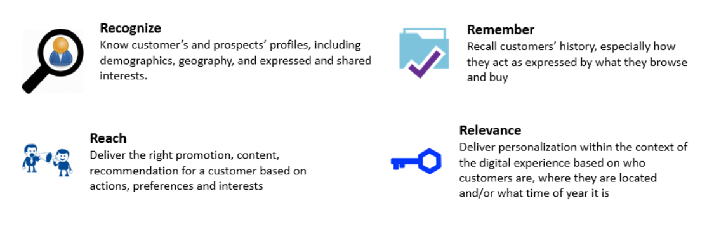
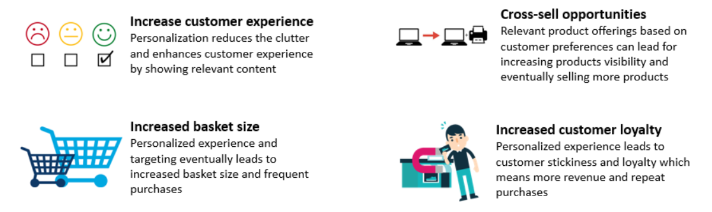
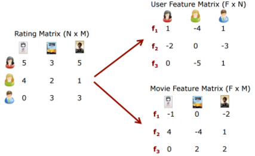
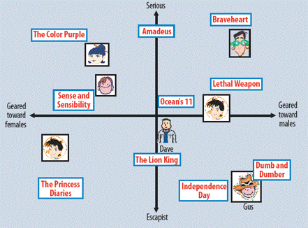
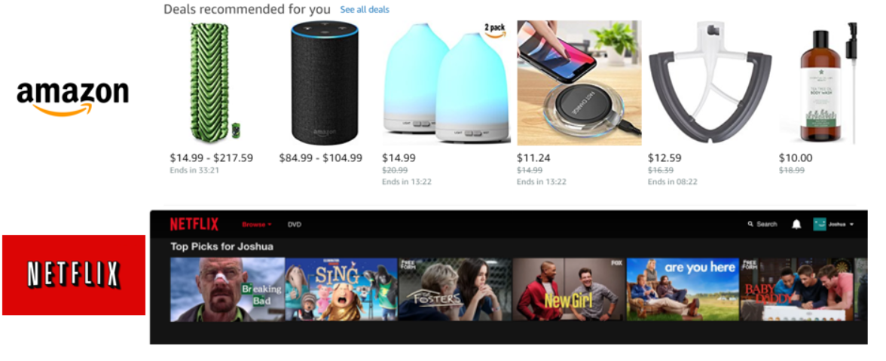
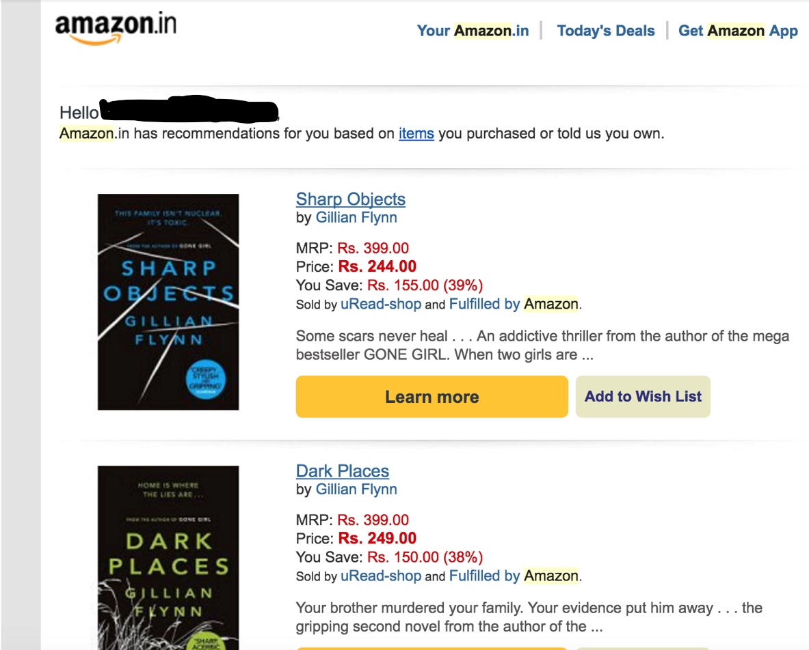
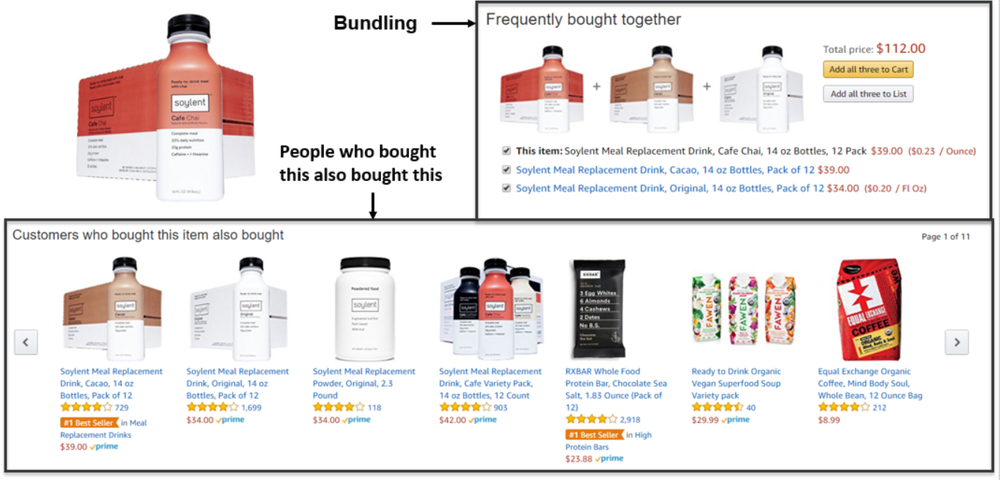

Solving business usecases by recommender system using lightFM
In this post, I am going to write about Recommender systems, how they are used in many e-commerce websites. The post will also cover about building simple recommender system models using Matrix Factorization algorithm using lightFM package and my recommender system cookbook. The post will focus on business use cases and simple implementations. The post only cover basic intuition around algorithms and will provide links to resources if you want to understand the math behind the algorithm.
Motivation
I am an avid reader and a believer in open source education and continuously expand my knowledge around data science & computer science using online courses, blogs, Github repositories and participating in data science competitions. While searching for quality content on the internet, I have come across various learning links which either focus on the implementation of the algorithm using specific data/modeling technique in ABC language or focus on business impact/results using the broad concept of a family of algorithms(like classification, forecasting, recommender systems etc.) but don’t go into details of how to do it. So the idea is to write some blogs which can combine both business use cases with codes & algorithmic intuition to provide a holistic view of how data science is used in business scenarios.
As the world is becoming more digital, we are already getting used to a lot of personalized experience and the algorithm which help us achieve this falls in the family of recommender systems. Almost every web-based platform is using some recommender system to provide customized content. Following are the companies I admire the most.
What is personalization?
Personalization is a technique of dynamically tailoring your content based on needs of each user. Simple examples of personalization could be movie recommendation on Netflix, personalized email targeting/re-targeting by e-commerce platforms, item recommendation on Amazon, etc. Personalization helps us achieve these four Rs - - Recognize: Know customer’s and prospects’ profiles, including demographics, geography, and expressed and shared interests. - Remember: Recall customers’ history, primarily how they act as expressed by what they browse and buy - Reach: Deliver the right promotion, content, recommendation for a customer based on actions, preferences, and interests - Relevance: Deliver personalization within the context of the digital experience based on who customers are, where they are located and what time of year it is

Why personalization?
Personalization has a lot of benefits for both users and companies. For users, it makes their life easy as they only get to see more relevant stuff to them (unless it’s an advertisement, even they are personalized). For business benefits are countless but here are few which I would like to mention - - Enhance customer experience: Personalization reduces the clutter and enhances the customer experience by showing relevant content - Cross-sell/ Up-sell opportunities: Relevant product offerings based on customer preferences can lead to increasing products visibility and eventually selling more products - Increased basket size: Personalized experience and targeting ultimately leads to increased basket size and frequent purchases - Increased customer loyalty: In the digital world, customer retention/loyalty is the most prominent problem faced by many companies as finding a replacement for a particular service is quite easy. According to a Forbes article, Forty-four percent of consumers say they will likely repeat after a personalized experience

Introduction to Matrix factorization
Matrix factorization is one of the algorithms from recommender systems family and as the name suggests it factorize a matrix, i.e., decompose a matrix in two(or more) matrices such that once you multiply them you get your original matrix back. In case of the recommendation system, we will typically start with an interaction/rating matrix between users and items and matrix factorization algorithm will decompose this matrix in user and item feature matrix which is also known as embeddings. Example of interaction matrix would be user-movie ratings for movie recommender, user-product purchase flag for transaction data, etc.

Typically user/item embeddings capture latent features about attributes of users and item respectively. Essentially, latent features are the representation of user/item in an arbitrary space which represents how a user rate a movie. In the example of a movie recommender, an example of user embedding might represent affinity of a user to watch serious kind of movie when the value of the latent feature is high and comedy type of movie when the value is low. Similarly, a movie latent feature may have a high value when the movie is more male driven and when it’s more female-driven the value is typically low.

For more information on matrix factorization and factorization machines you can read these articles -
Matrix Factorization: A Simple Tutorial and Implementation in Python
Introductory Guide – Factorization Machines & their application on huge datasets (with codes in Python)
HandOn: Building recommender system using LightFM package in Python
In the hands-on section, we will be building recommender system for different scenarios which we typically see in many companies using LightFM package and MovieLens data. We are using small size data which contains 100,000 ratings and 1,300 tag applications applied to 9,000 movies by 700 users
Data
Let’s start by importing data, recommender system cookbook and preprocessing cookbook files for this hands-on section. I have written these reusable generic cookbook codes to increase productivity and write clean/modular codes; you will see we can build a recommender system using 10-15 lines of code by using these cookbooks(do more with less!).
# Importing Libraries and cookbooks
from recsys import * ## recommender system cookbook
from generic_preprocessing import * ## pre-processing code
from IPython.display import HTML ## Setting display options for Ipython Notebook# Importing rating data and having a look
ratings = pd.read_csv('./ml-latest-small/ratings.csv')
ratings.head()| userId | movieId | rating | timestamp | |
|---|---|---|---|---|
| 0 | 1 | 31 | 2.5 | 1260759144 |
| 1 | 1 | 1029 | 3.0 | 1260759179 |
| 2 | 1 | 1061 | 3.0 | 1260759182 |
| 3 | 1 | 1129 | 2.0 | 1260759185 |
| 4 | 1 | 1172 | 4.0 | 1260759205 |
As we can see rating data contain user id, movie id and a rating between 0.5 to 5 with a timestamp representing when the rating was given.
# Importing movie data and having a look at first five columns
movies = pd.read_csv('./ml-latest-small/movies.csv')
movies.head()| movieId | title | genres | |
|---|---|---|---|
| 0 | 1 | Toy Story (1995) | Adventure|Animation|Children|Comedy|Fantasy |
| 1 | 2 | Jumanji (1995) | Adventure|Children|Fantasy |
| 2 | 3 | Grumpier Old Men (1995) | Comedy|Romance |
| 3 | 4 | Waiting to Exhale (1995) | Comedy|Drama|Romance |
| 4 | 5 | Father of the Bride Part II (1995) | Comedy |
Movie data consist of movie id, their title, and genre they belong.
Preprocessing
As I mentioned before, to create a recommender system we need to start by creating an interaction matrix. For this task, we will use the create_interaction_matrix function from the recsys cookbook. This function requires you to input a pandas dataframe and necessary information like column name for user id, item id, and rating. It also takes an additional parameter threshold if norm=True which means any rating above the mentioned threshold is considered a positive rating. In our case, we don’t have to normalize our data, but in cases of retail data any purchase of a particular type of item can be considered a positive rating, quantity doesn’t matter.
# Creating interaction matrix using rating data
interactions = create_interaction_matrix(df = ratings,
user_col = 'userId',
item_col = 'movieId',
rating_col = 'rating')
interactions.head()| movieId | 1 | 2 | 3 | 4 | 5 | 6 | 7 | 8 | 9 | 10 | … | 161084 | 161155 | 161594 | 161830 | 161918 | 161944 | 162376 | 162542 | 162672 | 163949 |
|---|---|---|---|---|---|---|---|---|---|---|---|---|---|---|---|---|---|---|---|---|---|
| userId | |||||||||||||||||||||
| 1 | 0.0 | 0.0 | 0.0 | 0.0 | 0.0 | 0.0 | 0.0 | 0.0 | 0.0 | 0.0 | … | 0.0 | 0.0 | 0.0 | 0.0 | 0.0 | 0.0 | 0.0 | 0.0 | 0.0 | 0.0 |
| 2 | 0.0 | 0.0 | 0.0 | 0.0 | 0.0 | 0.0 | 0.0 | 0.0 | 0.0 | 4.0 | … | 0.0 | 0.0 | 0.0 | 0.0 | 0.0 | 0.0 | 0.0 | 0.0 | 0.0 | 0.0 |
| 3 | 0.0 | 0.0 | 0.0 | 0.0 | 0.0 | 0.0 | 0.0 | 0.0 | 0.0 | 0.0 | … | 0.0 | 0.0 | 0.0 | 0.0 | 0.0 | 0.0 | 0.0 | 0.0 | 0.0 | 0.0 |
| 4 | 0.0 | 0.0 | 0.0 | 0.0 | 0.0 | 0.0 | 0.0 | 0.0 | 0.0 | 4.0 | … | 0.0 | 0.0 | 0.0 | 0.0 | 0.0 | 0.0 | 0.0 | 0.0 | 0.0 | 0.0 |
| 5 | 0.0 | 0.0 | 4.0 | 0.0 | 0.0 | 0.0 | 0.0 | 0.0 | 0.0 | 0.0 | … | 0.0 | 0.0 | 0.0 | 0.0 | 0.0 | 0.0 | 0.0 | 0.0 | 0.0 | 0.0 |
5 rows × 9066 columns
As we can see the data is created in an interaction format where rows represent each user and columns represent each movie id with ratings as values.
We will also create user and item dictionaries to later convert user_id to user_name or movie_id to movie_name by using create_user_dict and create_item dict function.
# Create User Dict
user_dict = create_user_dict(interactions=interactions)
# Create Item dict
movies_dict = create_item_dict(df = movies,
id_col = 'movieId',
name_col = 'title')Building Matrix Factorization model
To build a matrix factorization model, we will use the runMF function which will take following input -
- interaction matrix: Interaction matrix created in the previous section - n_components: Number of embedding generated for each user and item - loss: We need to define a loss function, in this case, we are using warp loss because we mostly care about the ranking of data, i.e, which items should we show first - epoch: Number of times to run - n_jobs: Number of cores to use in parallel processing
mf_model = runMF(interactions = interactions,
n_components = 30,
loss = 'warp',
epoch = 30,
n_jobs = 4)Now we have built our matrix factorization model we can now do some interesting things. There are various use cases which can be solved by using this model for a web platform let’s look into them.
Usecase 1: Item recommendation to a user
In this use case, we want to show a user, items he might be interested in buying/viewing based on his/her interactions done in the past. Typical industry examples for this are like “Deals recommended for you” on Amazon or “Top pics for a user” on Netflix or personalized email campaigns. 
We can use the sample_recommendation_user function for this case. This functions take matrix factorization model, interaction matrix, user dictionary, item dictionary, user_id and the number of items as input and return the list of item id’s a user may be interested in interacting.
## Calling 10 movie recommendation for user id 11
rec_list = sample_recommendation_user(model = mf_model,
interactions = interactions,
user_id = 11,
user_dict = user_dict,
item_dict = movies_dict,
threshold = 4,
nrec_items = 10,
show = True)Known Likes:
1- The Hunger Games: Catching Fire (2013)
2- Gravity (2013)
3- Dark Knight Rises, The (2012)
4- The Hunger Games (2012)
5- Town, The (2010)
6- Exit Through the Gift Shop (2010)
7- Bank Job, The (2008)
8- Departed, The (2006)
9- Bourne Identity, The (1988)
10- Step Into Liquid (2002)
11- SLC Punk! (1998)
12- Last of the Mohicans, The (1992)
13- Good, the Bad and the Ugly, The (Buono, il brutto, il cattivo, Il) (1966)
14- Robin Hood: Prince of Thieves (1991)
15- Citizen Kane (1941)
16- Trainspotting (1996)
17- Pulp Fiction (1994)
18- Usual Suspects, The (1995)
Recommended Items:
1- Dark Knight, The (2008)
2- Inception (2010)
3- Iron Man (2008)
4- Shutter Island (2010)
5- Fight Club (1999)
6- Avatar (2009)
7- Forrest Gump (1994)
8- District 9 (2009)
9- WALL·E (2008)
10- Matrix, The (1999)print(rec_list)[593L, 260L, 110L, 480L, 47L, 527L, 344L, 858L, 231L, 780L]As we can see in this case user is interested in “Dark Knight Rises(2012)” so the first recommendation is “The Dark Knight(2008)”. This user also seems to have a strong liking towards movies in drama, sci-fi and thriller genre and there are many movies recommended in the same genre like Dark Knight(Drama/Crime), Inception(Sci-Fi, Thriller), Iron Man(Sci-FI thriller), Shutter Island(Drame/Thriller), Fight club(drama), Avatar(Sci-fi), Forrest Gump(Drama), District 9(Thriller), Wall-E(Sci-fi), The Matrix(Sci-Fi)
Similar models can also be used for building sections like “Based on your recent browsing history” recommendations by just changing the rating matrix only to contain interaction which is recent and based on browsing history visits on specific items.
Usecase 2: User recommendation to a item
In this use case, we will discuss how we can recommend a list of users specific to a particular item. Example of such cases is when you are running a promotion on an item and want to run an e-mail campaign around this promotional item to only 10,000 users who might be interested in this item.

We can use the sample_recommendation_item function for this case. This functions take matrix factorization model, interaction matrix, user dictionary, item dictionary, item_id and the number of users as input and return the list of user id’s who are more likely be interested in the item.
## Calling 15 user recommendation for item id 1
sample_recommendation_item(model = mf_model,
interactions = interactions,
item_id = 1,
user_dict = user_dict,
item_dict = movies_dict,
number_of_user = 15)[116, 410, 449, 657, 448, 633, 172, 109, 513, 44, 498, 459, 317, 415, 495]As you can see function return a list of userID who might be interested in item id 1. Another example why you might need such model is when there is an old inventory sitting in your warehouse which needs to clear up otherwise you might have to write it off, and you want to clear it by giving some discount to users who might be interested in buying.
Usecase 3: Item recommendation to items
In this use case, we will discuss how we can recommend a list of items specific to a particular item. This kind of models will help you to find similar/related items or items which can be bundled together. Typical industry use case for such models are in cross-selling and up-selling opportunities on product page like “Products related to this item”, “Frequently bought together”, “Customers who bought this also bought this” and “Customers who viewed this item also viewed”.
“Customers who bought this also bought this” and “Customers who viewed this item also viewed” can also be solved through market basket analysis.

To achieve this use case, we will create a cosine distance matrix using item embeddings generated by matrix factorization model. This will help us calculate similarity b/w items, and then we can recommend top N similar item to an item of interest. First step is to create a item-item distance matrix using the create_item_emdedding_distance_matrix function. This function takes matrix factorization models and interaction matrix as input and returns an item_embedding_distance_matrix.
## Creating item-item distance matrix
item_item_dist = create_item_emdedding_distance_matrix(model = mf_model,
interactions = interactions)## Checking item embedding distance matrix
item_item_dist.head()| movieId | 1 | 2 | 3 | 4 | 5 | 6 | 7 | 8 | 9 | 10 | … | 161084 | 161155 | 161594 | 161830 | 161918 | 161944 | 162376 | 162542 | 162672 | 163949 |
|---|---|---|---|---|---|---|---|---|---|---|---|---|---|---|---|---|---|---|---|---|---|
| movieId | |||||||||||||||||||||
| 1 | 1.000000 | 0.760719 | 0.491280 | 0.427250 | 0.484597 | 0.740024 | 0.486644 | 0.094009 | -0.083986 | 0.567389 | … | -0.732112 | -0.297997 | -0.451733 | -0.767141 | -0.501647 | -0.270280 | -0.455277 | -0.292823 | -0.337935 | -0.636147 |
| 2 | 0.760719 | 1.000000 | 0.446414 | 0.504502 | 0.525171 | 0.572113 | 0.364393 | 0.290633 | 0.231926 | 0.653033 | … | -0.748452 | -0.307634 | -0.165400 | -0.526614 | -0.146751 | -0.156305 | -0.223818 | -0.138412 | -0.209538 | -0.733489 |
| 3 | 0.491280 | 0.446414 | 1.000000 | 0.627473 | 0.769991 | 0.544175 | 0.632008 | 0.336824 | 0.392284 | 0.510592 | … | -0.331028 | -0.264556 | -0.308592 | -0.285085 | -0.046424 | -0.165821 | -0.183842 | -0.143613 | -0.156418 | -0.378811 |
| 4 | 0.427250 | 0.504502 | 0.627473 | 1.000000 | 0.582582 | 0.543208 | 0.602390 | 0.655708 | 0.527346 | 0.471166 | … | -0.380431 | -0.163091 | -0.232833 | -0.334746 | -0.052832 | -0.266185 | -0.158415 | -0.211618 | -0.232351 | -0.469629 |
| 5 | 0.484597 | 0.525171 | 0.769991 | 0.582582 | 1.000000 | 0.354141 | 0.639958 | 0.396447 | 0.432026 | 0.385051 | … | -0.273074 | -0.280585 | -0.306195 | -0.265243 | 0.012961 | -0.225142 | -0.317043 | -0.136875 | -0.122382 | -0.312858 |
5 rows × 9066 columns
As we can see the matrix have movies as both row and columns and the value represents the cosine distance between them. Next step is to use item_item_recommendation function to get top N items with respect to an item_id. This function takes item embedding distance matrix, item_id, item_dictionary and number of items to be recommended as input and return similar item list as output.
## Calling 10 recommended items for item id
rec_list = item_item_recommendation(item_emdedding_distance_matrix = item_item_dist,
item_id = 5378,
item_dict = movies_dict,
n_items = 10)Item of interest :Star Wars: Episode II - Attack of the Clones (2002)
Item similar to the above item:
1- Star Wars: Episode III - Revenge of the Sith (2005)
2- Lord of the Rings: The Two Towers, The (2002)
3- Lord of the Rings: The Fellowship of the Ring, The (2001)
4- Lord of the Rings: The Return of the King, The (2003)
5- Matrix Reloaded, The (2003)
6- Harry Potter and the Sorcerer's Stone (a.k.a. Harry Potter and the Philosopher's Stone) (2001)
7- Gladiator (2000)
8- Spider-Man (2002)
9- Minority Report (2002)
10- Mission: Impossible II (2000)As we can see for “Star Wars: Episode II - Attack of the Clones (2002)” movie we are getting it’s next released movies which is “Star Wars: Episode III - Revenge of the Sith (2005)” as the first recommendation.
Summary
Like any other blog, this method isn’t perfect for every application, but the same ideas can work if we use it effectively. There is a lot of advancements in recommender systems with the advent of Deep learning. While there is room for improvement, I am pleased with how it has been working for me so far. I might write about deep learning based recommender systems later sometime.
In the meantime, I hope you enjoyed reading, and feel free to use my code to try it out for your purposes. Also, if there is any feedback on code or just the blog post, feel free to reach out on LinkedIn or email me at aayushmnit@gmail.com.